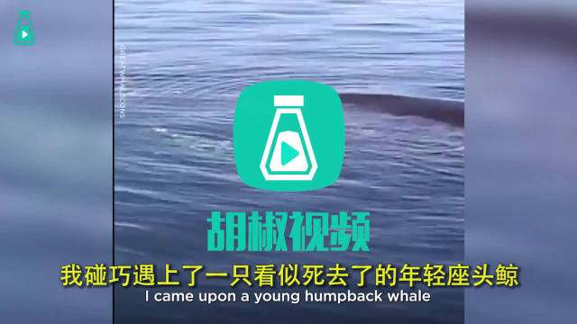

真美好啊//@Eileen_深海鱼://@宋佳:“妈妈我知道它在干什么，她在告诉我们它自由了！” ❤️❤️❤️@胡椒视频:原本只是一次普通的船游... 却因遇到命在旦夕的鲸鱼而变成拯救行动！5个人1把小刀，解开足以困住鲸鱼的渔网..... 连鲸鱼都在最后用最美的方式感谢这群好人 胡椒视频的秒拍视频  987万次播放 04:27
哈哈，精辟了。//@梅林核桃王：老王对自己的媳妇讲贞洁，对隔壁女邻居讲放飞自我@神嘛事儿:一个人把一个事物以什么角度看待，会产生不同的效果，比如养狗，在农村养狗就是工具，看家用的，在肉狗厂就是商品，养肥了要卖给吃狗肉的，在城里就变成宠物了，供爹，同样的道理，股市，在国家眼里，股市首先它是一个金融工具，既然是工具那么有时候就有很奇怪的定位，在职业炒股的人眼里，股市是自己吃饭的营生，所以不涨就会很痛苦，一个事物以什么方式定位，比怎么伺候这个东西更重要，如果还不懂，我再举个例子，诗人在追妹子得逞前，一定会歌颂爱情，但一旦妹子追到手，就会开始鼓吹自由，道理也是一样的
下周三晚上（8月15日）要在Women Who Code BJ（女性工程师联盟）上做个分享。聊聊医学大数据案例，聊聊医美。WWCode讲座：NLP Technique and Bigdata in Cosmetic Medical